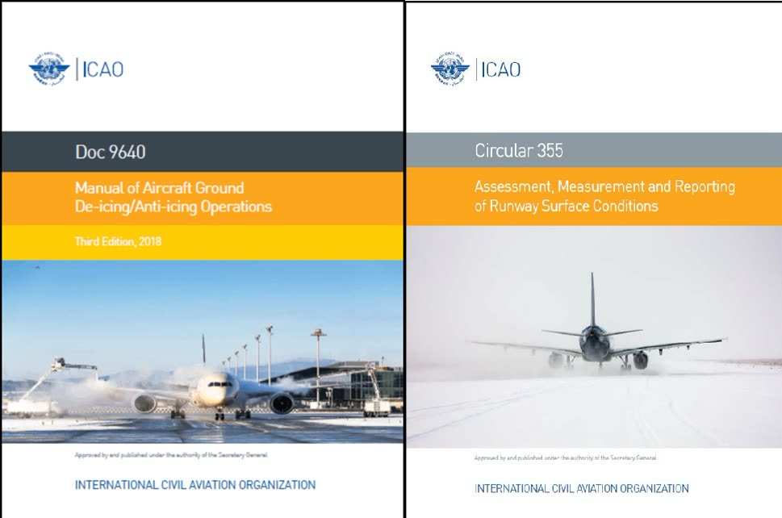

Module 6 · Operations and Human Factors
Lesson 29: Regulations, Standards and Safety Management
Lesson narration
Checking for narration…
Learning objectives
- Identify the main international regulations and standards for cold weather operations.
- Describe the elements of a ground de-icing/anti-icing programme.
- Use the safety management system to report winter hazards.

International framework
| Source | Content |
|---|---|
| ICAO Annex 6, Part I | Operator responsibilities, including the requirement that an aircraft is not to take off unless it has been inspected for icing and, if necessary, de-iced and anti-iced. |
| ICAO Doc 9640 | Manual of Aircraft Ground De-icing/Anti-icing Operations. |
| ICAO Annex 14 and PANS-Aerodromes (Doc 9981) | Global Reporting Format for runway surface conditions. |
| ICAO Doc 10064 | Aeroplane Performance Manual, including contaminated runway performance. |
| EASA Air Operations | CAT.OP.MPA.250 (ice and other contaminants — ground procedures) and CAT.OP.MPA.255 (in-flight procedures). |
| FAA | 14 CFR 121.629 (Clean Aircraft Concept and de-icing programme) and AC 120-60 (ground de-icing/anti-icing programme). |
| Transport Canada / FAA | Holdover time guidelines, published every winter season. |
| SAE International | AS6285 (de-icing/anti-icing processes), AS6286 (training and qualification), AMS1424 and AMS1428 (fluid specifications). |
National regulations from the civil aviation authority, the aircraft AFM, and the Domestic Airlines Operations Manual implement these standards for our operation. They are the documents you must follow.
The ground de-icing/anti-icing programme
Operators must have an approved programme that typically includes:
- responsibilities of the operator, the commander and the service providers;
- the procedures for inspection, treatment, communication and the anti-icing code;
- the holdover time guidelines to be used, and how to use them;
- initial and recurrent training for flight crew, cabin crew, dispatchers and ground staff;
- quality control of fluids, equipment and service providers;
- the pre-take-off check and pre-take-off contamination check procedures.
Safety management and reporting
Winter operations produce many precursors to accidents. Report them through the company safety reporting system:
- contamination found after de-icing, or a take-off with suspected contamination;
- communication errors with de-icing crews or ATC;
- fluid smells or smoke in the cabin;
- braking action worse than reported, and runway excursions or near-excursions;
- control stiffness or restriction, and residue findings;
- holdover times exceeded, or pressure to depart.
Domestic Airlines operates a just culture: honest reports of errors and hazards are used to learn and to improve the system, not to blame individuals.
Key takeaways
- ICAO, EASA, FAA, Transport Canada and SAE set the international framework; national rules, the AFM and the Operations Manual apply it.
- Operators need an approved ground de-icing/anti-icing programme with training and quality control.
- Report winter hazards and errors — just culture protects honest reporting.
Knowledge check
Which organisation publishes the holdover time guidelines used worldwide each winter?